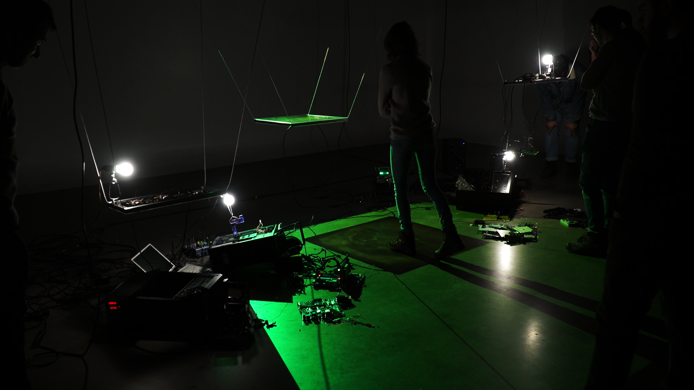
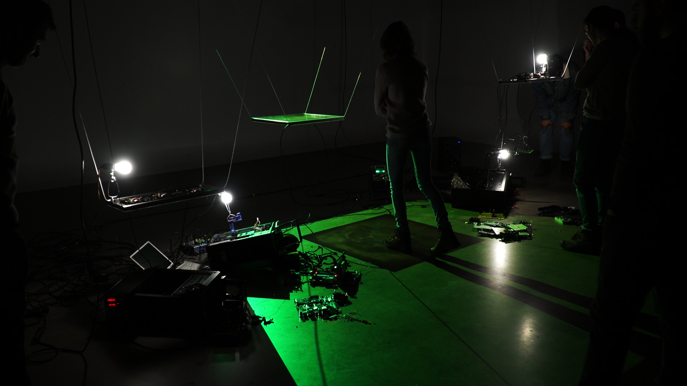

Mycocene, Kinetic Installation, 2018
Mycocene is a room sized installation consisting of reanimated electronic waste sculptures and a live cell culture, all occupying a shared dimly lit space. Mycocene uses a juxtaposition of bio-art and electronic (kinetic) sculpture to critique our relation to technology, one that largely ignores the ecological impact technology has on the Earth. Using a mixture of reclaimed electronic waste and the fungal-esque organism slime mold, Mycocene acts as a hybrid between the living and the technological world.
The room of Mycocene contains five electronic waste sculptures all separated but in communication with the slime mold. The slime mold is centered in the room, bathed by a spotlight of green light that emanates to the remainder of the room. The e-waste sculptures, positioned around the cell container are separated by dimly lit, relying on the green glow of the slime mold to outline their components. Each of them are actuated by an electronic pulse modelled off the live growth and movement of the slime mold. The two are intertwined, creating a living atmosphere permeated by the sound of motors spinning, cameras zooming, hard drives spinning. The atmosphere is disharmonious, yet organic. The soundscape solely relies on the physically audible (non-curated) actuations of the sculptures. As they jolt to life, the biological pulses of the slime mold can be heard in the rhythms of the sound echoing through the space. Moving around the dim channels between sculptures, decaying security cameras start to scan, the frame of a human body emerges onto a CRT screen buried under wires. Another pulse triggers a melody punctuated by noise and static, as a magnetic tape crawls along the walls. Surrounded by electronic waste, the singular slime mold culture orchestrates an evolving performance, using the sculptures as its means of communication with the world.
a project created by the Somme collective
Somme is a collaborative art practice formed by Sam Bourgault, Owen Coolidge, Matthew Halpenny, Matthew Salaciak, and Emma Forgues in 2018. We naturally began working to- gether after meeting during our degree in Computation Arts at Concordia University. Their diverse backgrounds and skill sets allow them to merge computer programming, electronics, sound synthesis, visual arts, and science to form a transdisciplinary practise. Focusing on such aspects as human-technology interactions, media archeology, and digital materiality. They employ kinetic installations, interactive experiences, and speculative performances to express our thoughts and feelings vis-à-vis our technological reality.
more information HERE
EXHIBITION
ELEKTRA XX @ OBORO, Montreal CA
June 2019
Behavioral Matter Conference as part of the Fabric of the Living Exhibition @ the Centre Pompidou, Paris FR
March 2019
TALK
MIAN - International Marketplace for Digital Art @ Centre Phi, Montreal CA
June 2019


 



SPONSORS